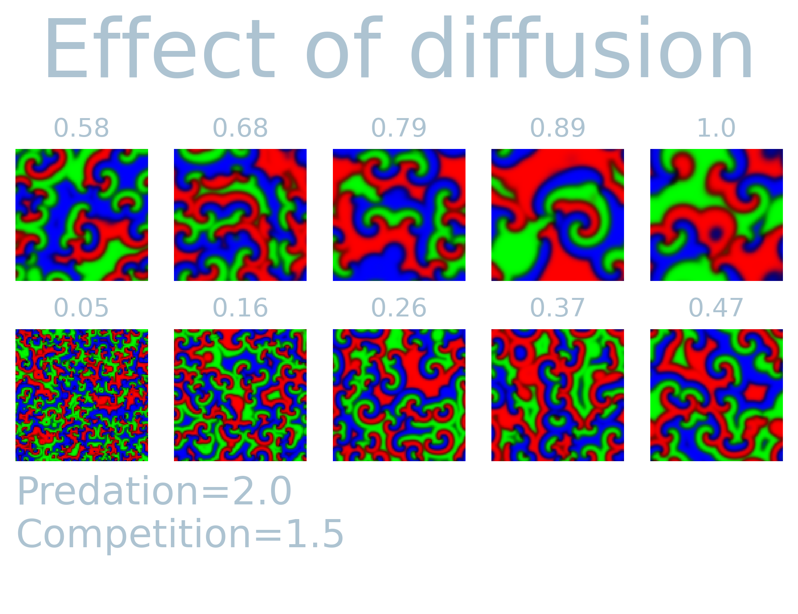
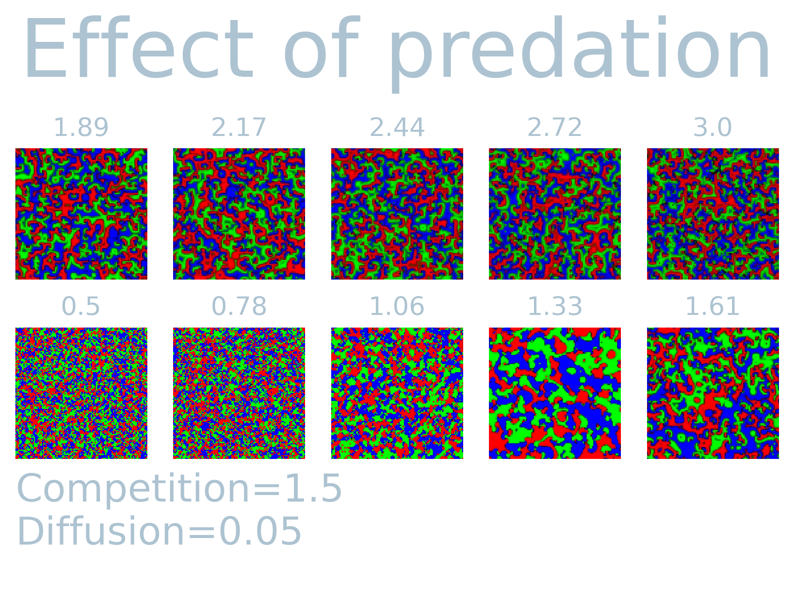
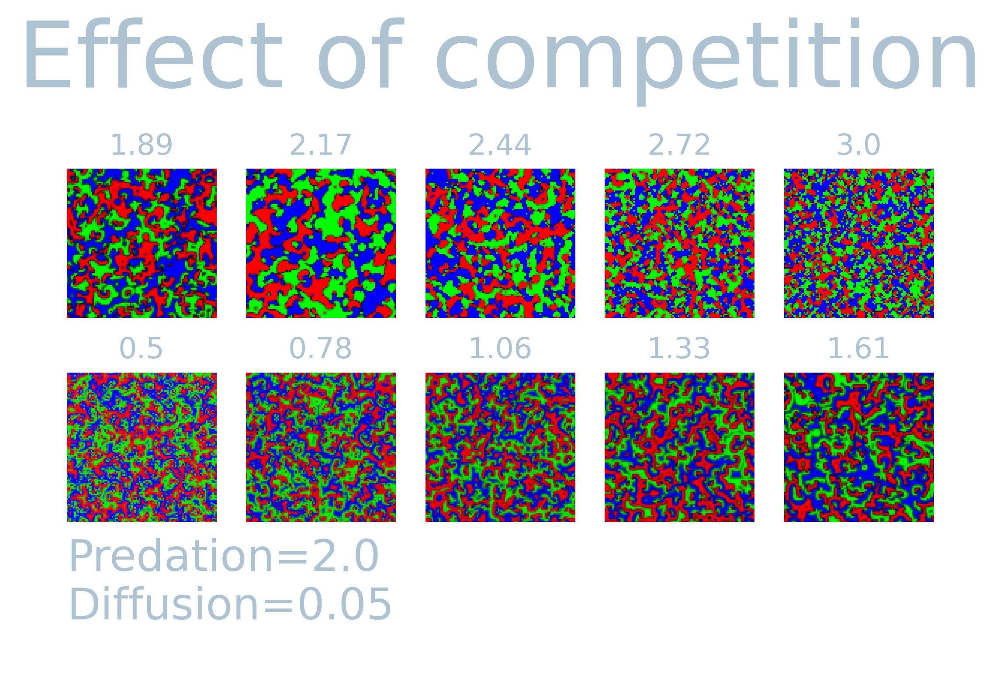

Some years ago an article was published using rock-paper-scissor dynamics to study the effects on biodiversity. I got inspired by the excellent website of Dirck Brockmann and decided to implement it myself in the the computational toolbox I wrote . Below I simulated the rock-paper-scissor model and created a (possibly novel) agent-based inspired version of it. The model produces beautiful fluid-like patterns as can be seen in the video below simulated on a 100x100 grid with Moore neighborhood.
The model
The model was designed to understand the co-existance of interacting species in a spatially extended ecosystem. Each vertex point represents the locus of three species. The color (red, green, blue) are proportional to the density of the three species at each pixel (vertex point).
The model produces a wide range of different patterns based on three input parameters
- Diffusion ($D$): mobility of species.
- Predation ($P$): competition between the tree different species.
- Competition ($C$): Competition among different specifies.
Each vertex in the system $\sigma_i \in \sigma :=${ $\sigma_0, \dots, \sigma_n$ } contains a vector with the density of the three “species”, i.e. rock ($r$), paper ($g$), or scissor ($b$). The concentration of each specie at vertex $i$ is updated according to
$$ \frac{d \sigma_i}{dt} = \scriptstyle \begin{cases} \frac{dr_i}{dt}& = ((\underbrace{P (g_i - b_i) + r_i}_{\textrm{predation}} - \underbrace{C (g_i + b_i) - r_i^2}_{\textrm{Competition}})r_i - \underbrace{D(\sum_{<i,j>} r_j r_i)}_{\textrm{mobility}}) \delta t \\\ \frac{dg_i}{dt}& = ((P (b_i - r_i) + g_i - C (r_i + b_i) - g_i^2)g_i - D(\sum_{<i,j>} g_j g_i)) \delta t \\\ \frac{db_i}{dt}& = ((P (r_i - g_i) + b_i - C (r_i + g_i) - b_i^2)b_i - D(\sum_{<i,j>} b_j b_i)) \delta t, \end{cases} $$
where $<i,j>$ indicates the nearest neighbors of variable $i$.
In order to see the effect of the three parameters, I simulated $T=1000$ steps and visualized the last system state while varying predation, competition and diffusion while keeping the rest constant. It is fascinating to see how each parameter causes different spatially extended patterns. The simulations over time exhibit fluid-like behavior, and the observed patterns are distinct on the set of input parameters. Most notably, the diffusion parameter can cause large extended patches similar to what can be observed in Ising/Potts model. Predation on the other hand tends to cause fragmentation of species for lower values, but for higher values create similar larger patterns. The interaction among the variables shows a non-linear effect with each other. This can readily be seen in the competition parameters. That is, the competition parameter shows larger patches only for a small range (1.89 - 2.17) while keeping all other values constant.
  Agent-based implementation
In the original paper, the authors apply a so-called Gillspie algorithm to efficiently sample the reaction between the different density. I was interested whether one can get away with “tradtiional” Monte-Carlo methods and implemented and agent-based approach to the model above.
Each agent updates stochastically with parameters
- Mobility $M \in [0, 1]$
- Reproduction $R \in [0, 1]$
- Selection $S \in [0, 1]$
An agent can only reproduce if an adjacent vertex is dead. The other moves are updated sequentially with the probabilities indicated above. In short, each agent can assume one of 4 states:
- Dead state
- “Rock” state
- “Paper” state
- “Scissor” state
Each update step an agent interacts with a random neighbor and randomly chooses an interaction strategy random. That is, if the adjacent neighbor is empty, it could reproduce with probability $R$, otherwise it may attempt kill the neighbor with probability $S$. Lastly, it could inhabit the neighboring site with probability $M$. Note that the total set is a pair of (mobility, selection or reproduction).
We then yield the following for $(M, R, S) \rightarrow 2.5:1.5:.05 = 1.3:1:0.03 \rightarrow (.5, .66, 0.016)$:
This maintains the circular behavior found in the original paper, however this does not employ the Gillspie algorithm. This will be the topic of some future post.
Casper van Elteren
Computational scientist | Data scientist | Tinkerer
I am a computational scientist interested in data analysis, visualization and software engineering.